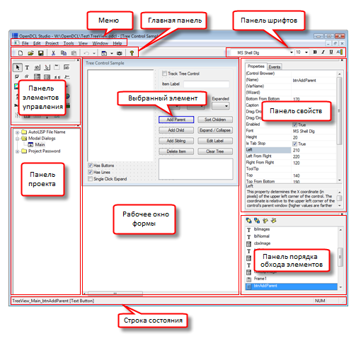

OpenDCL Studio предназначена для создания и редактирования проектов OpenDCL. Один проект может содержать несколько форм и изображений. Проекты сохраняются в файлах с расширением .odcl. Следующая иллюстрация показывает основные области редактора проектов OpenDCLStudio.

Новые формы можно добавить в проект если щелкнуть правой кнопкой мыши в панели проекта, либо нажать "Новая форма" в выпадающем меню главной панели инструментов. Двойной щелчок по значку формы в панели проекта открывает ее в рабочей области для редактирования. Обратите внимание, что меню Окно может быть использовано для установки каскадом или плиткой сразу нескольких форм для одновременного просмотра.
Для добавления элемента управления в форму нужно выбрать его тип на панели элементов, а затем растянуть прямоугольник в рабочем окне формы. Размер и положение элемента управления можно изменить, перетащив элемент управления или его края, или с помощью клавиш со стрелками на клавиатуре, чтобы двигать выбранные элементы управления в любом направлении. Шрифт по умолчанию для текста элемента можно изменить с помощью панели инструментов шрифта, когда элемент выбран. Другие свойства элементов могут быть изменены в панели свойств, либо щелчком правой кнопкой мыши на элементе управления в пункте "Свойства".
Панель порядка обхода элементов показывает порядок обхода элементов для текущей формы. Имена элементов управления можно выбирать и перемещать в новое положение, чтобы изменить их порядок. Порядок обхода не контролирует порядок, в котором элементы управления отрисовываются в форме, так что он не может быть использован, чтобы поместить один элемент над другим.Обратите внимание, что прозрачные элементы управления всегда отрисовываются после непрозрачных элементов, таким образом перекрывающимися элементами можно управлять, установив их "верхний" цвет в "прозрачный".
Нажав кнопку выбора элементов ( ) можно
выбрать один или несколько элементов управления для
редактирования. При нажатии на элемент управления он выбирается. Если
в это время нажать [Ctrl], то можно добавлять элементы к текущему выделению или убирать ранее
выбранные. При нажатии на пустой области активной формы начинается
операция растягивания рамки выбора, которая выбирает все элементы
управления внутрипрямоугольника или пересекающиеся с ним.
) можно
выбрать один или несколько элементов управления для
редактирования. При нажатии на элемент управления он выбирается. Если
в это время нажать [Ctrl], то можно добавлять элементы к текущему выделению или убирать ранее
выбранные. При нажатии на пустой области активной формы начинается
операция растягивания рамки выбора, которая выбирает все элементы
управления внутрипрямоугольника или пересекающиеся с ним.
Когда выбраны несколько элементов, изменения свойств в панели свойств применяются сразу к всем ним. Это обеспечивает удобный способ синхронизации свойств между несколькими элементами управления. Например, выравнивание нескольких элементов управления по левому краю может быть совершено путем их выбора и ввода нового значения свойства 'Лево'.
Изменение свойств элементов управления во время разработки можно сделать несколькими способами. Самым простым способом изменить свойства элемента управления является его выбор и редактирование значений свойств в панели свойств. Нажатие на нужное имя свойства инициирует его редактирование. Для текстовых или числовых типов свойств редактирование представляет собой текстовое поле, в котороемогут быть введены новые значения, далее нужно нажать [Enter], чтобы применить его. Свойства, принимающие список значений, отображаются выпадающим списком из которого можно выбрать нужное значение. Свойства в виде списка принимают список значений , разделенных знаком вертикальной черты ("|"). Логические свойства просто отображают флажок, который может быть включен или отключен. Некоторые свойства, такие как 'Шрифт', открывают отдельное диалоговое окно для внесения изменений.
Диалог свойств элементов предоставляет дружественный пользовательский интерфейс для многих свойств. Диалог свойств элементов открывается при двойном щелчке поэлементу в панели порядка обхода; выбором "Свойства" контекстного меню щелкнув правой кнопки мыши по элементу в рабочей области, или нажав "(Конструктор)" в панели свойств. Длятаких свойств элементов, как подсказка, шрифт, выравнивание, диалоговое окно свойств элемента является основным интерфейсом для внесения изменений. Для таких элементов, как сетка, панель вкладок, комбо с рисунками, диалоговое окно конструктора предоставляет доступ к их скрытым свойствам, которые не могут быть изменены с помощью панели свойств.
Создание форм с изменяемыми размерами является важной составляющей для конечного пользователя, и это можно легко сделать в OpenDCL Studio. Для этого свойство формы 'Разрешить растягивание' должно быть 'True'. При создании форм с изменяемыми размерами, элементы управления на ней также должны меняться вместе с ее изменением пользователем. Свойства, которые контролируют поведение изменения размеров элементов управления можно изменить визуально на вкладке Геометрия в диалоговом окне свойств элемента.